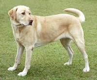

The Labrador Retriever was bred to be both a friendly companion and a useful working dog breed. Historically, he earned his keep as a fisherman’s helper: hauling nets, fetching ropes, and retrieving fish from the chilly North Atlantic. Today’s Labrador Retriever is as good-natured and hard working as his ancestors, and he’s America’s most popular breed. These days the Lab works as a retriever for hunters, assistance dog to the handicapped, show competitor, and search and rescue dog, among other canine jobs. Read more at http://dogtime.com/dog-breeds/labrador-retriever#bJFXTRkTQwDcT8Zv.99>
